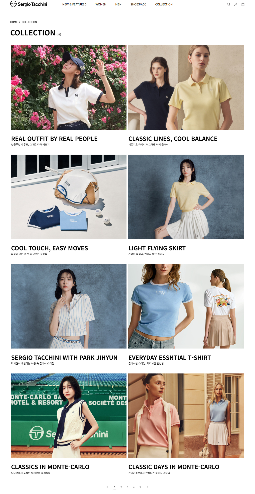

<div class="detail-wrap">
  <div class="content-wrap">
    <h4 class="title">세르지오 타키니<span>기여도 50%</span></h4>
      <div class="desc">
        <p class="date">2023. 02 ~ 2024. 02</p>
        테니스 패션 브랜드 '세르지오 타키니'의 웹사이트 신규 구축 퍼블리싱 작업에 참여하였으며, <br>
        이 후 기획전 페이지 운영과 유지보수 퍼블리싱 작업을 하였습니다. <br>
        카페24 플랫폼을 기반으로 HTML, CSS, JavaScript(jQuery) 및 swiper, aos 라이브러리 등을 활용하였습니다.<br>
        ✔️사용툴 : IntelliJ, Git, Figma
      </div>
      <div class="content">
        <h5>OUTPUT</h5>
        <div class="img-wrap grid">
          <div class="img-item">
            
          </div>
          <div class="img-item">
            
          </div>
                    <div class="img-item">
            
          </div>
                    <div class="img-item">
            
          </div>
        </div>
      </div>
  </div>
</div>
